AMD
На даній сторінці ви знайдете інформацію про фірму виробника процесорів для ПК AMD.
Історія AMD
Advanced Micro Devices (AMD) була заснована в 1969 році в Каліфорнії Джеррі Сандерсом та групою інших інженерів, які раніше працювали в Fairchild Semiconductor. Перші роки діяльності компанії зосереджувалися на створенні напівпровідників для мейнфреймів і великих комп'ютерних систем. З моменту свого заснування AMD прагнула стати конкурентом на ринку мікропроцесорів, але свій реальний успіх отримала тільки після кількох десятиліть постійних інновацій.
На початку 2000-х років AMD здобула перший великий успіх на ринку процесорів для ПК, коли представила серію процесорів Athlon. Ці процесори дозволили AMD конкурувати з лідером галузі, компанією Intel, завдяки кращій продуктивності при меншій вартості. Компанія продовжила розвиватися і зміцнювати свої позиції на ринку процесорів та інших напівпровідникових рішень.
Придбання ATI Technologies у 2006 році стало значним кроком у розвитку AMD, оскільки це дало можливість компанії вийти на ринок графічних процесорів. Це дозволило AMD стати важливим гравцем у сфері комплексних обчислювальних рішень для ПК, включаючи як CPU, так і GPU.
Центральні процесори (CPU)
AMD відома своїми центральними процесорами (CPU), які використовуються в персональних комп'ютерах, серверах та інших електронних пристроях. Першим великим проривом на цьому ринку стали процесори серії Athlon, які вийшли в 1999 році. Вони стали важливою альтернативою процесорам Intel, пропонуючи високу продуктивність і меншу вартість, що зробило їх популярними серед ентузіастів та геймерів.
Значним досягненням AMD стала лінійка процесорів Ryzen, яка була представлена в 2017 році. Процесори Ryzen були розроблені на базі архітектури Zen і отримали визнання за високу продуктивність у багатопоточних обчисленнях та доступну ціну. Зокрема, Ryzen дозволили AMD повернути собі місце серед найкращих виробників процесорів для геймерів, професійних користувачів та інженерів.
Процесори EPYC, які призначені для серверів та дата-центрів, також внесли вагомий внесок у популяризацію AMD на корпоративному ринку. EPYC відрізняються великою кількістю ядер, високою енергоефективністю та підтримкою сучасних стандартів безпеки і віртуалізації.
Процесори серії K7
Представлені в 1999 році. Випускалися до 2005 року.
| Процесор | Ядро | Особливості | Серія (архітектура) |
|---|---|---|---|
| Athlon | Argon (K7) | Перше ядро, використане в процесорах Athlon. Має зовнішній інклюзивний кеш другого рівня (512 КБ). | K7 |
| Orion/Pluto (K75) | Ядро Argon, виготовлене за оновленим техпроцесом. | ||
| Thunderbird | Ядро K75 з інтегрованим ексклюзивним кешем другого рівня (256 КБ). | ||
| Athlon XP | Palomino | Модернізоване ядро Thunderbird з апаратною передвибіркою даних і блоком SSE. | |
| Thoroughbred | Ядро Palomino, виготовлене за оновленим техпроцесом. | ||
| Barton | Модернізоване ядро Thoroughbred зі збільшеним до 512 КБ кешем другого рівня. | ||
| Thorton | Ядро Barton з частково вимкненим кешем другого рівня (256 КБ). | ||
| Athlon MP | Palomino | Процесор Athlon XP з можливістю роботи в багатопроцесорній конфігурації. | |
| Thoroughbred | |||
| Thorton | |||
| Athlon 4 | Corvette | Мобільний варіант ядра Palomino з підтримкою енергозберігаючої технології PowerNow! | |
| Mobile Athlon XP | Thoroughbred | Мобільний варіант ядра Thoroughbred з підтримкою енергозберігаючої технології PowerNow! |
| Приклади процесорів покоління K7 | ||||
|---|---|---|---|---|
| 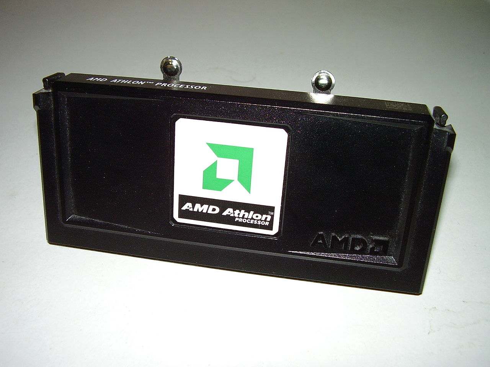 | 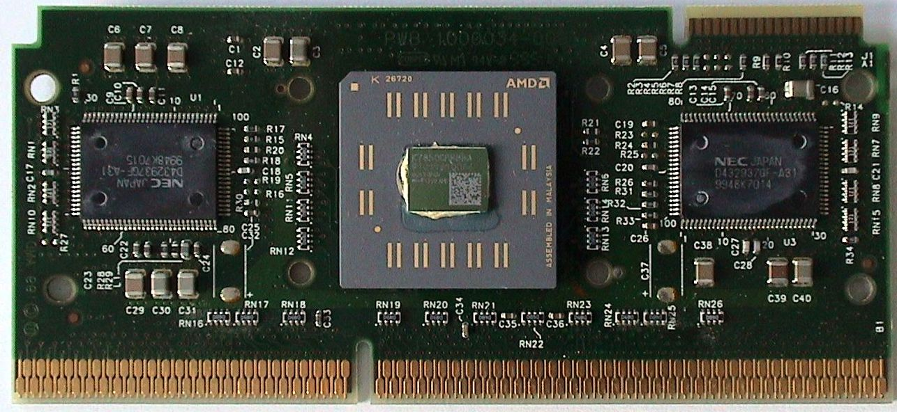 | 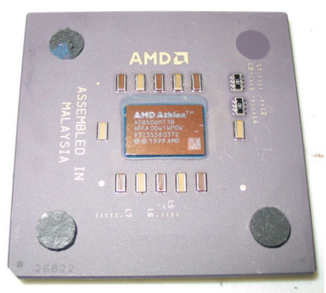 | 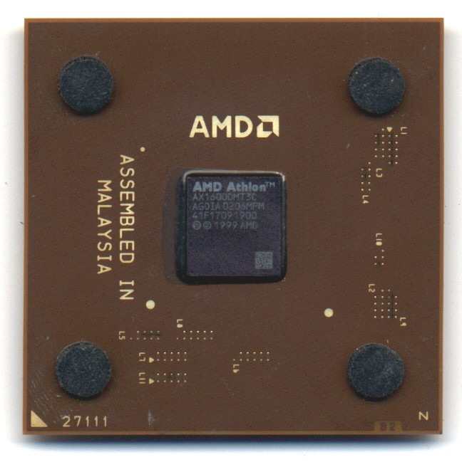 | 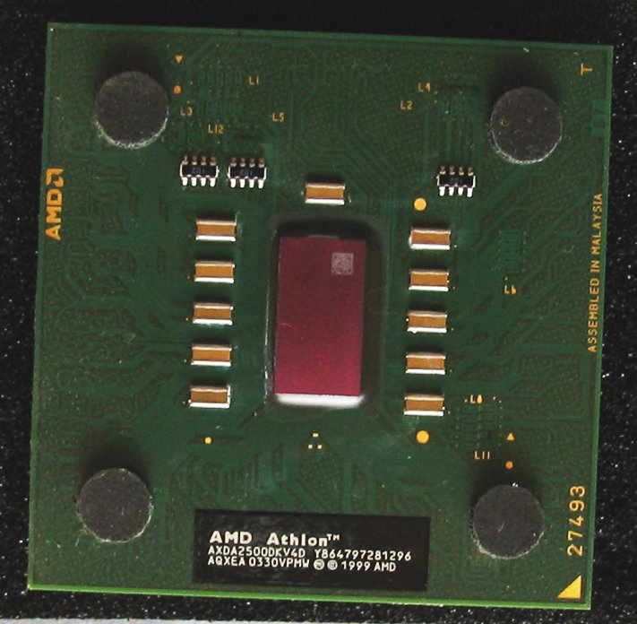 |
| Athlon (K7) | Athlon (K75) | Athlon (Thunderbird) | Athlon XP | Athlon XP (Barton) |
Процесори серії K8
Представлені в 2003 році. Усі процесори серії К8 мають інтегрований контролер пам'яті (одноканальний DDR - Socket 754, двоканальний DDR - Socket 939 / Socket 940 або двоканальний DDR2 - Socket AM2 / Socket F) та підтримують набір інструкцій AMD64 (якщо не вказано протилежне).
| Процесор | Ядро | Особливості | Серія (архітектура) |
|---|---|---|---|
| Athlon 64 | Clawhammer | Перша модель процесорів Athlon 64 (130 нм, 1 МБ кешу другого рівня). | K8 |
| Newcastle | Ядро Clawhammer з частково відключеним кешем другого рівня (512 КБ). | ||
| Winchester | Процесори Athlon 64, виготовлені за оновленим (90 нм) техпроцесом. | ||
| Venice | Ревізія ядра Winchester | ||
| San Diego | Ревізія ядра Venice | ||
| Orleans | Процесори Athlon 64 для Socket AM2 | ||
| Lima | Одноядерні процесори на базі ядра Brisbane | ||
| Athlon 64 FX | Sledgehammer | Перша модель процесорів Athlon 64 FX (130 нм) | |
| San Diego | Процесори Athlon 64 FX, виготовлені за оновленим техпроцесом (90 нм) | ||
| Toledo | Двоядерні процесори Athlon FX (90 нм) | ||
| Athlon 64 X2 | Manchester | Двоядерні процесори на базі ядра Venice (512 КБ кешу другого рівня, Socket 939) | |
| Toledo | Двоядерні процесори на базі ядра Venice (1 МБ кешу другого рівня, Socket 939) | ||
| Windsor | Двоядерні процесори на базі ядра Orleans (1 МБ кешу другого рівня, Socket AM2) | ||
| Brisbane | Двоядерні процесори, виготовлені за оновленим (65 нм) техпроцесом | ||
| Athlon X2 | Перейменовані процесори Athlon 64 X2 з новою системою позначення моделей. | ||
| Athlon XP-M | Dublin | Мобільні процесори. Інструкції AMD64 заблоковані. | |
| Mobile Athlon 64 | Newcastle | Мобільний варіант ядра Newcastle. | |
| Odessa | Процесори Mobile Athlon 64, виготовлені за оновленим техпроцесом (90 нм). | ||
| Oakville | Процесори Mobile Athlon 64 LV (їхніми наступниками стали Turion 64), виготовлені за оновленим техпроцесом (90 нм) зі зниженим енергоспоживанням. | ||
| Newark | Процесори Mobile Athlon 64, замінили Odessa з Socket 754 та підтримкою SSE3. | ||
| Trinidad | Двоядерні процесори Mobile Athlon 64 X2 (90 нм техпроцес, арх. K8 rev.F, 512 КБ кешу другого рівня). |
| Приклади процесорів покоління K8 | ||
|---|---|---|
| 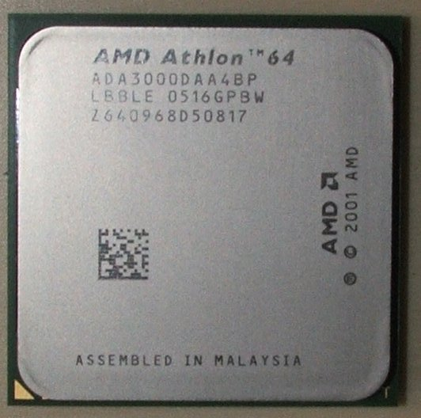 | 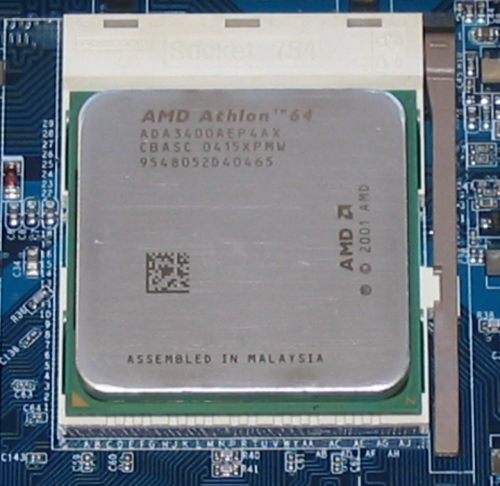 | 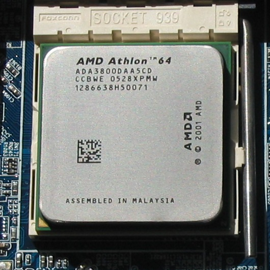 |
| Athlon 64 | Athlon 64 X2 | |
Процесори серії K10
Представлені в 2007 році. До офіційного анонсу дане сімейство мало неофіційну назву K8L, однак офіційно воно іменується K10.
Процесори серії K10 мають два інтегровані контролери пам'яті DDR2 (які можуть працювати як один двоканальний), поділюваний кеш третього рівня (L3), підтримують набір інструкцій AMD64 і SSE4a.
| Процесор | Ядро | Особливості | Серія (архітектура) |
|---|---|---|---|
| Athlon X2 | Kuma | Двоядерні процесори серії Athlon X2 7x50 та модель Athlon X2 6500 (65 нм) | K10 |
Процесори серії K10.5
| Процесор | Ядро | Особливості | Серія (архітектура) |
|---|---|---|---|
| Athlon II | Propus | Чотириядерні процесори Athlon II X4 6xx (45 нм), окрім Athlon II X4 640 ADX640WFK42GR | K10.5 |
| Zosma | Чотириядерний процесор Athlon II X4 640 (45 нм) з маркуванням ADX640WFK42GR | ||
| Rana | Триядерні процесори Athlon II X3 4xx (45 нм) | ||
| Regor | Двоядерні процесори Athlon II X2 2xx/B2x-B30 (45 нм) | ||
| Sargas | Одноядерні процесори Athlon II 1xx (45 нм) | ||
| Athlon X2 | Двоядерні процесори серії Athlon X2 5x00+ (45 нм) | ||
| Athlon II Mobile | Caspian | Двоядерні AMD Athlon II Dual-Core M3x0 з підтримкою пам'яті DDR2 (45 нм, socket S1g3) | |
| Champlain | Двоядерні AMD Athlon II Dual-Core N3x0/P3x0 з підтримкою пам'яті DDR3 (45 нм, socket S1g4) |
Процесори з мікроархітектурою Zen
На мікроархітектурах Zen засновані десктопні процесори Ryzen у кількох лінійках: Ryzen 9, Ryzen 7, Ryzen 5 та Ryzen 3. Процесори лінійки Ryzen 9 зараз поставляються у варіаціях до 24 ядер (наприклад, у моделях на базі архітектури Zen 4). Ryzen 7 зазвичай має 8 ядер, тоді як Ryzen 5 забезпечує 6 або 8 ядер, а Ryzen 3 — 4 ядра. Процесори Ryzen використовують сокет AM4, а з новішими поколіннями (починаючи з Zen 4) — AM5.
Для сегмента високопродуктивних десктопів (HEDT) випущена лінійка Ryzen Threadripper, яка зараз має до 64 ядер. Найновіші моделі, наприклад, серії Ryzen Threadripper PRO 5000WX, призначені для робочих станцій і використовують сокет sWRX8. Процесори на базі архітектури Zen 3 включають моделі з 16 до 64 ядер.
Серверні процесори на базі Zen мають кодову назву Naples і були представлені в липні 2017 року як EPYC 7000, з кількістю ядер від 8 до 32 і з підтримкою двопроцесорних систем. Використовують сокет SP3. Наступне покоління серверних процесорів на базі Zen 2, відоме під кодовою назвою Rome, було представлене в серпні 2019 року і пропонувало до 64 ядер.
Серверні процесори на базі Zen 3, відомі як Milan, були випущені у 2021 році і також підтримують до 64 ядер та сокет SP3. Найновіші серверні процесори на базі Zen 4 мають кодову назву Genoa та можуть мати до 96 або 128 ядер, що робить їх одними з найпотужніших у своєму класі. Вони також використовують новий сокет SP5.
| Процесор | Ядро | Особливості | Серія (архітектура) |
|---|---|---|---|
| Ryzen/Athlon | Summit Ridge | Процесори AMD Ryzen мають до 8 ядер, виготовлені на 14 нм | Zen |
| Raven Ridge | Процесори AMD Ryzen з вбудованою графікою Radeon RX Vega також виготовлені на 14 нм | ||
| Pinnacle Ridge | Процесори AMD Ryzen мають до 8 ядер, виготовлені на 12 нм. Перевага перед Zen полягає у вищих робочих частотах. | Zen+ | |
| Picasso | Процесори AMD Ryzen з вбудованою графікою Radeon RX Vega також виготовлені на 12 нм | ||
| Matisse | Процесори AMD Ryzen мають чіплети (до 2), виготовлені на 7 нм, блок i/o на 12 нм. Перевага перед Zen(+) полягає у більшій продуктивності на ядро та підтримці пам'яті понад 4266 МГц | Zen 2 | |
| EPYC | Naples | Процесори мають чіплети, виготовлені на 14 нм, мають від 8 до 32 ядер | Zen |
| Rome | Процесори мають чіплети, виготовлені на 7 нм, блок i/o на 14 нм, мають від 8 до 64 ядер | Zen 2 |
| Приклади процесорів поколінь Zen, Zen+ Zen 2, Zen 3, Zen 4 | ||||
|---|---|---|---|---|
| 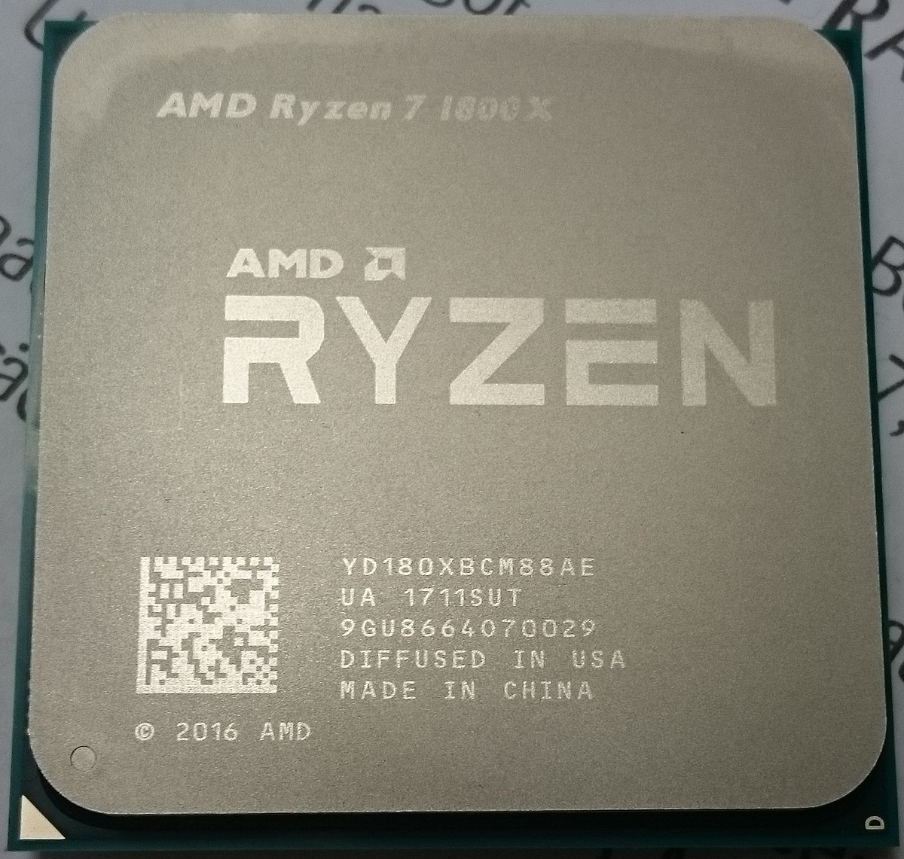 | 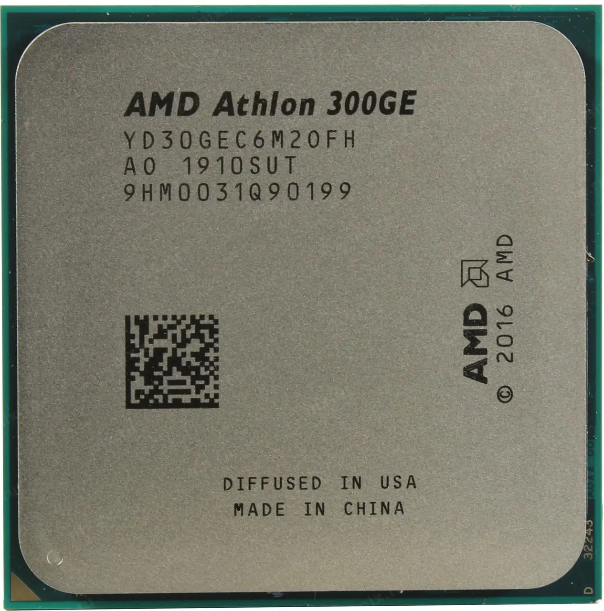 | 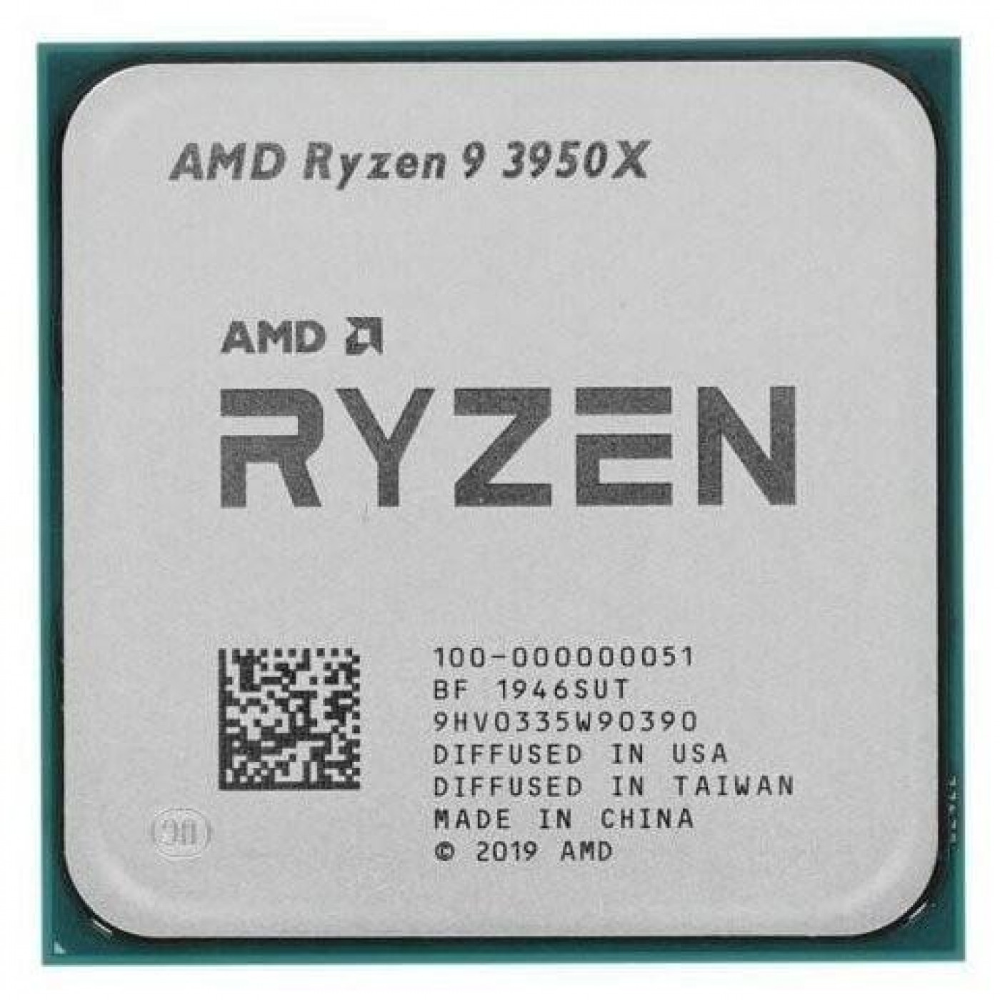 | ||
| Ryzen 7 1800X (Zen) | Athlon 300GE (Zen+) | Ryzen 9 3950X (Zen 2) | ||
| 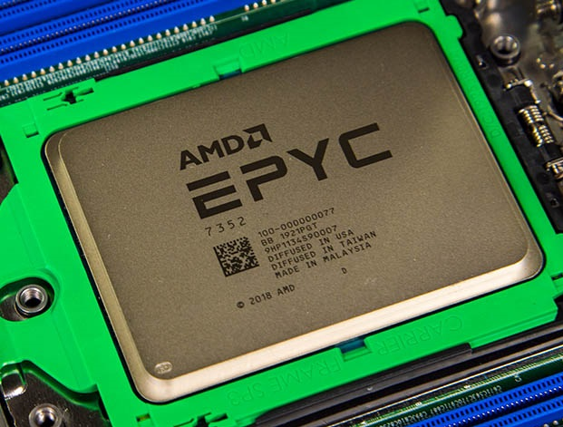 | 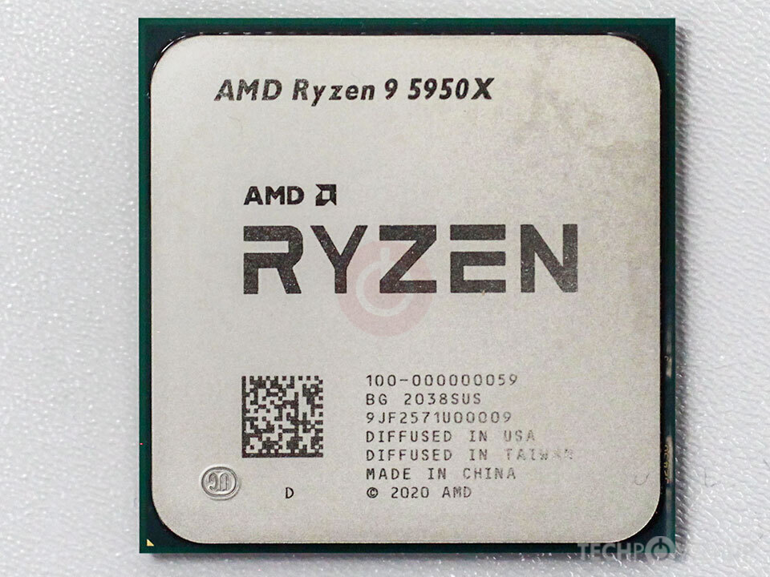 | 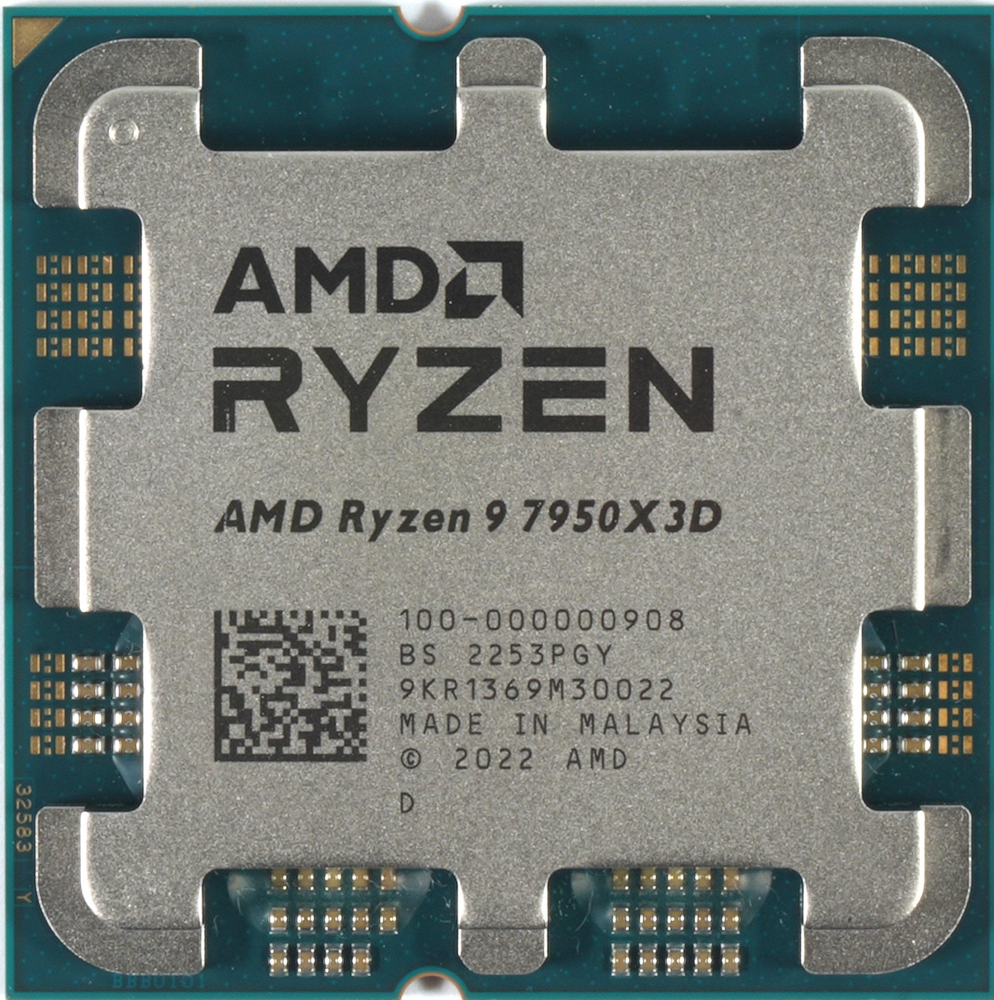 | ||
| EPYC 7352 (Zen 2) | Ryzen 9 5950X (Zen 3) | Ryzen 9 7950X3D (Zen 4) | ||
Графічні процесори (GPU)
AMD активно розвиває сегмент графічних процесорів (GPU), особливо після придбання ATI Technologies. Це дозволило компанії вийти на ринок ігрових та професійних графічних рішень під брендом Radeon. Лінійка Radeon стала широко відомою серед геймерів завдяки високій продуктивності і підтримці сучасних ігрових технологій, таких як DirectX 12, Vulkan, і Ray Tracing.
Протягом років AMD вдосконалювала свої графічні процесори, випускаючи серії Radeon RX, які є конкурентоспроможними щодо рішень від NVIDIA. Ці графічні процесори стали популярними серед геймерів завдяки кращому співвідношенню ціна-продуктивність. Крім того, AMD активно працює з розробниками програмного забезпечення, що дозволяє її GPU оптимально працювати з сучасними іграми та програмами для професійного рендерингу.
Графічні процесори AMD також використовуються в серверних рішеннях та суперкомп'ютерах. Наприклад, архітектура RDNA і новітні Instinct MI GPU спрямовані на прискорення наукових обчислень та роботу з інтелектуальними технологіями, такими як штучний інтелект та машинне навчання.
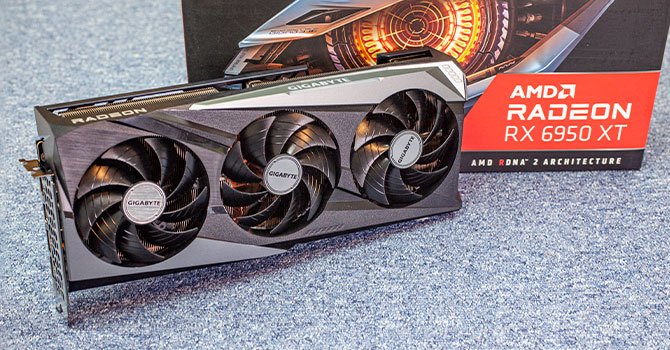Приклад відеокарти: AMD RX 5950XT.
Інновації та технології
AMD завжди прагнула до інновацій, випереджаючи своїх конкурентів у деяких аспектах технологічного розвитку. Наприклад, вона була однією з перших компаній, яка впровадила підтримку 64-бітових обчислень у своїх процесорах, що стало важливим кроком для розвитку сучасних операційних систем та програмного забезпечення.
Одна з ключових технологій AMD — це архітектура Zen, яка є основою багатьох сучасних процесорів Ryzen і EPYC. Zen забезпечує високу енергоефективність і продуктивність, а також дозволяє процесорам AMD конкурувати з лідерами галузі на рівні багатопоточних завдань.
AMD також активно розвиває технології, пов'язані з штучним інтелектом, машинним навчанням та високопродуктивними обчисленнями. Продукти серії Instinct орієнтовані на застосування в суперкомп'ютерах і великих дата-центрах, забезпечуючи швидкі обчислення для дослідницьких проєктів, таких як біомедицина і кліматологія.
Стратегія та майбутнє
AMD продовжує зміцнювати свої позиції на ринку обчислювальних технологій, зосереджуючи увагу на геймерському сегменті, серверних рішеннях і графічних технологіях. Стратегія компанії полягає в подальшому розширенні лінійок процесорів Ryzen і EPYC, а також у розробці нових технологій для високопродуктивних обчислень.
У найближчому майбутньому компанія планує випустити нові процесори на базі архітектури Zen 5, які обіцяють ще більше підвищити продуктивність і знизити енергоспоживання. Крім того, AMD планує розширити свою присутність на ринку хмарних обчислень, штучного інтелекту і технологій віртуальної реальності.
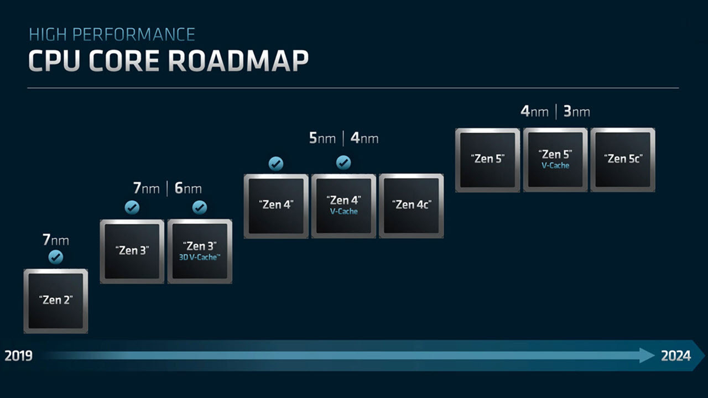Дорожна карта розвитку процесорів від AMD.